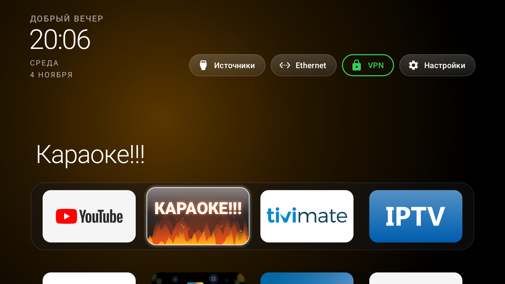
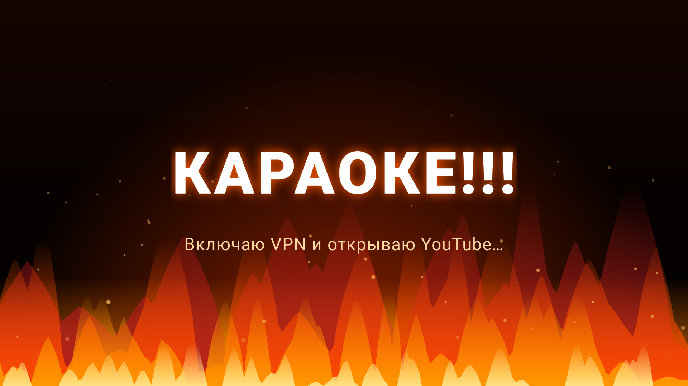
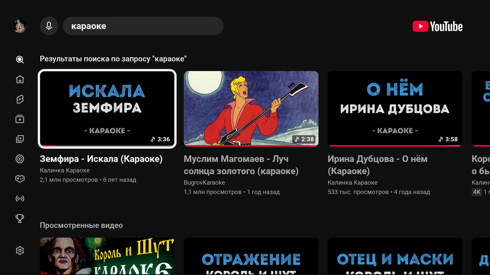

Вечная заставка
Открываешь YouTube — висит логотип. Идёшь в Юбуст, жмёшь «Подключить», возвращаешься, ждёшь. И так каждый раз.
- VPN нужно включать руками
- YouTube рисует «Нет подключения к сети»
- После перезагрузки всё заново
Открываешь YouTube — приложение само запускает Юбуст, нажимает «Подключить» и возвращает YouTube на экран уже с туннелем. На главной появляется кнопка «Караоке!!!» с живым огнём.
Проблема и решение
YouTube TV в России не грузится без VPN, а Юбуст не умеет стартовать сам: always-on VPN на телевизоре не поднимает туннель, публичного intent'а «подключиться» у клиента нет.
Открываешь YouTube — висит логотип. Идёшь в Юбуст, жмёшь «Подключить», возвращаешься, ждёшь. И так каждый раз.
Служба доступности видит, что открылся YouTube, сама открывает Юбуст, нажимает «Подключить» и возвращает YouTube уже с VPN.


Алгоритм
Никакого root и никаких серверов: всё происходит на самом телевизоре, через штатный AccessibilityService.
Служба ловит смену окна на com.google.android.youtube.tv и проверяет, поднят ли интерфейс tun0.
Служба открывает Юбуст, находит кнопку «Подключить» и нажимает её. Если туннеля нет через 7 секунд — пробует ещё раз.
YouTube перезапускается с CLEAR_TASK, чтобы не оставаться на экране ошибки. Для «Караоке!!!» открывается поиск «караоке».
Кнопка
Отдельная плитка в доке лаунчера. Рисуется анимированным огнём: языки пламени, угли и горящий текст. Нажатие запускает сценарий «VPN → YouTube-караоке».
onPause
Установка
Нужен Android TV 8.0+ и включённая отладка по сети. APK подписаны debug-ключом — это sideload-сборка.
# 1. Подключиться к телевизору
adb connect 192.168.1.50:5555
# 2. Поставить APK
adb install -r YouTube-VPN-Gate-1.0.apk
# 3. Включить службу доступности
adb shell settings put secure enabled_accessibility_services \
"com.gathin.vpngate/com.gathin.vpngate.GateAccessibilityService"
adb shell settings put secure accessibility_enabled 1Или одной командой из репозитория:powershell -ExecutionPolicy Bypass -File app\install.ps1 -TvHost 192.168.1.50
Логи: adb logcat -s VpnGate. Если лаунчер уже стоял с другой подписью, обновление не установится — нужна пересборка своим ключом.
Ограничения